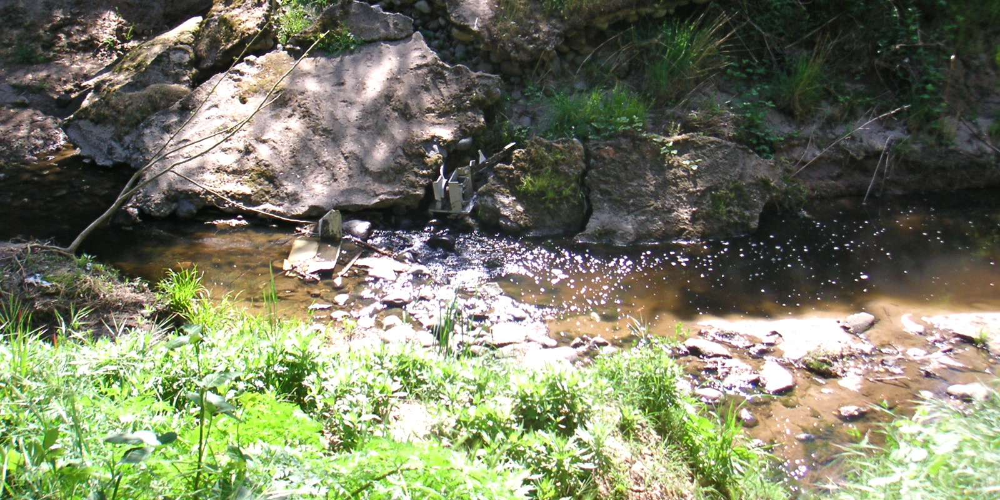

Learn more about the Arcade Creek Project:
Recent News:
The 14th year of the project has begun, and we have a record breaking 373 students! Teams have already been going out and have been working faster than any year previously.
Make sure that you get your ID card scanned in so you can attend lectures! A list of people with missing ID cards can be found here
We recived a watershed quality grant from Seterwater Utility Department of Water Resources of $2600 in the fall of 2011. Also, the Living Well Initiative grant of $500 was given to us by the Grants Advisory Board for Youth in January 2012.
Direction videos are up!
Maps and Directions from Mira Loma are also up on the Students page
Alex Honnold, world famous rock climber gave a talk at Mira Loma recently.
We were featured on the national TV show, Eco Company! Check it out!
From laboratory analysis to hands-on field studies, the Arcade Creek Project allows students to work in real-world situations that prepare them for college and careers beyond

The award-winning Arcade Creek Project is an ongoing study of the riparian corridor of the Arcade Creek, an urban watershed in Sacramento, California. It consists of eleven studies which measure the health of the Arcade Creek in various ways and is run entirely by students of Mira Loma High School and their six science instructors.
To learn more about each individual study and view collected data, visit the Studies page.
The Arcade Creek Project began eleven years ago to fulfill a curriculum requirement of the International Baccalaureate Program. Students coordinate a school-wide field project within the local community that combines the different science courses offered at Mira Loma. IB Science students study the nearby Arcade Creek, a beautiful neighborhood waterway that runs year-round. Over the years, the project has garnered numerous awards and inspired similar studies world-wide. For a more detailed description of the project, visit the About Us page.
Warning!
Beware of the poison oak at the creek sites, as it may cause rashes and irritation. It is not an invasive species, so do not remove it from the site. The picture above is an example of a poison oak plant. Note the three leaves. Be careful at the creek! So far poison oak has been spotted at site D.